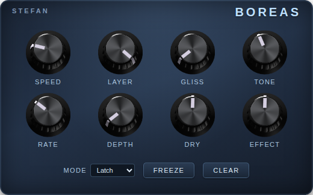

Boreas is a freeze pedal. Play something — a note, a chord, any sound — and stomp the switch: the sound you were making at that instant holds, as a perfectly steady drone that sustains forever underneath whatever you play next. It is like catching a moment of your sound in the air and keeping it there.
Freeze again and a second layer stacks on top of the first. Keep going — up to six layers — and you can build a whole chord, a pad, or a wall of sound one note at a time, then solo over it with your hands completely free.
The sustain is smooth because Boreas re-plays the tone of that moment, not a tape loop — so there is no seam, wobble, or repeat. A frozen layer sounds the same after a minute as it does after a second: still, calm, endless.
| Switch | What it does |
|---|---|
| 1 FREEZE | Captures the current sound and sustains it. Every press stacks another layer on top of the ones already playing, up to six. |
| 2 HOLD | A momentary freeze: the sound holds only while your foot is down and melts away when you release. Perfect for quick swells that should not leave a layer behind. Release always removes exactly the layer it created — never one of your stacked freezes. |
| 3 CLEAR | Each press removes the newest layer — like taking plates off a stack, top plate first. Press repeatedly to unwind back to silence. Layers fade out at the speed set by the SPEED knob. |
How quickly layers swell in and fade out.
The volume each new layer comes in at.
A one-shot pitch slide: the new layer starts below pitch and glides up into place.
Softens the high end of the frozen sound.
The speed of the Movement effect (see DEPTH).
How much the frozen sound moves: a gentle volume breathing plus a faint pitch shimmer, so long freezes feel alive.
The volume of your live playing in the output.
The volume of the frozen sound in the output.
Knob positions are given like a clock face: fully left is 7 o'clock, the middle is noon, fully right is 5 o'clock.
Strum a soft chord, freeze it, and play melodies on top. The pad swells in gently and stays put, like a keyboard player holding a chord for you all night.
Every freeze now takes four seconds to bloom. Stack two or three layers a few seconds apart and they rise like an organ filling a stone church. Follow with a big reverb for the full cathedral.
Freeze one low chord and let Movement do the playing: the drone slowly swells and recedes, with a faint shimmer, like something alive under the floorboards.
Hold the switch down during a sustained note, release as you change chords. You get reverb-like swells exactly where you want them, and nothing lingers after you let go.
Freeze the root note of your song: it fades in a whole octave below and glides up into pitch over two seconds — an instant cinematic opening.
The capture happens the instant you stomp. Pressing during the pick attack freezes the "thunk"; pressing while the note sings freezes the singing. Let each sound open up for a moment before you freeze it.
Freeze a low root. Then a fifth. Then a third, an octave up. Six layers is enough for voicings no single instrument could hold — each new note swelling in at the LAYER volume you chose.
All layers share one pool of "voices", so a sixth layer makes everything share a little. That is deliberate — it keeps the pedal from overloading the device — and in practice a big stack simply blends into one thick texture.
With DEPTH at zero the freeze is mathematically frozen — not even a flicker. Add DEPTH only when a long drone starts feeling too much like a test tone.
Boreas is free and open source. Download the latest release from
github.com/stefdoerr/boreas/releases
— each release has one file per platform. The examples below use
version v0.0.2; replace with the newest you see there.
boreas-v0.0.2-linux-x86_64.tar.gz.tar -xzf boreas-v0.0.2-linux-x86_64.tar.gz -C "$HOME/Documents/MOD Desktop/lv2/"
http://192.168.51.1).boreas-v0.0.2-dwarf-aarch64.tar.gz.base64 boreas-v0.0.2-dwarf-aarch64.tar.gz | curl -F 'package=@-' http://192.168.51.1/sdk/install
http://moddwarf.local — every address in this chapter works with
that in place of the IP. It is especially handy when the Dwarf is on your
Wi‑Fi or network instead of the USB cable, where its IP address varies.
If you have SSH access to your Dwarf set up, you can copy the bundle by hand:
tar -xzf boreas-v0.0.2-dwarf-aarch64.tar.gz scp -O -r boreas.lv2 root@192.168.51.1:/root/.lv2/
then reboot the unit.
| Audio | Mono input, mono output |
| Layers | Up to 6 simultaneous frozen layers |
| Format | LV2 plugin |
| Platforms | MOD Desktop (Linux x86_64), MOD Dwarf |
| Price & license | Free, open source (ISC license) |
| Source & releases | github.com/stefdoerr/boreas |